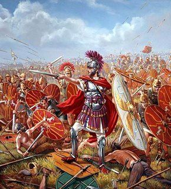
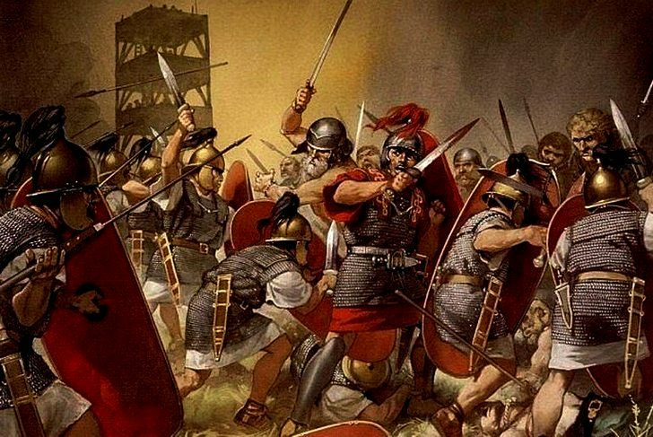

La República Romana (509 a.C. – 27 a.C.)
Tras la expulsión del último rey en 509 a.C., Roma se convirtió en una república gobernada por ciudadanos.
Características principales
- Gobierno sin rey: El poder se dividía entre magistrados y el Senado.
- Magistraturas:
- Cónsules (máximos líderes elegidos cada año)
- Pretores (justicia)
- Cuestores (finanzas)
- Ediles (infraestructura)
- Censores (censos y moral)
- Senado: Órgano de gran poder político compuesto por aristócratas.
- Asambleas populares: Ciudadanos que votaban leyes y elegían magistrados.
- Lucha de clases:
- Patricios: clase alta, nobleza tradicional
- Plebeyos: pueblo común que fue ganando derechos
Expansión militar
- Conquistas de toda Italia
- Guerras Púnicas contra Cartago
- Control de Grecia, Hispania, Galia y otras regiones
Crisis y fin
- Conflictos sociales y corrupción política
- Guerras civiles entre líderes como Mario, Sila y César
- Julio César es asesinado en 44 a.C.
- Su heredero Octavio (Augusto) funda el Imperio en 27 a.C.

